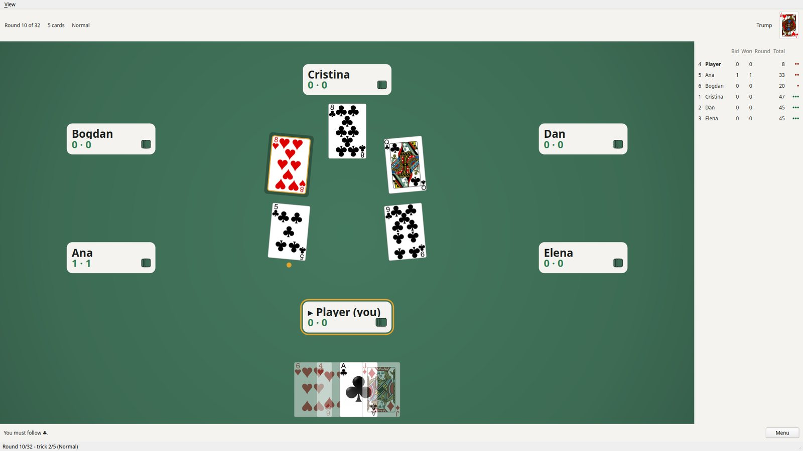
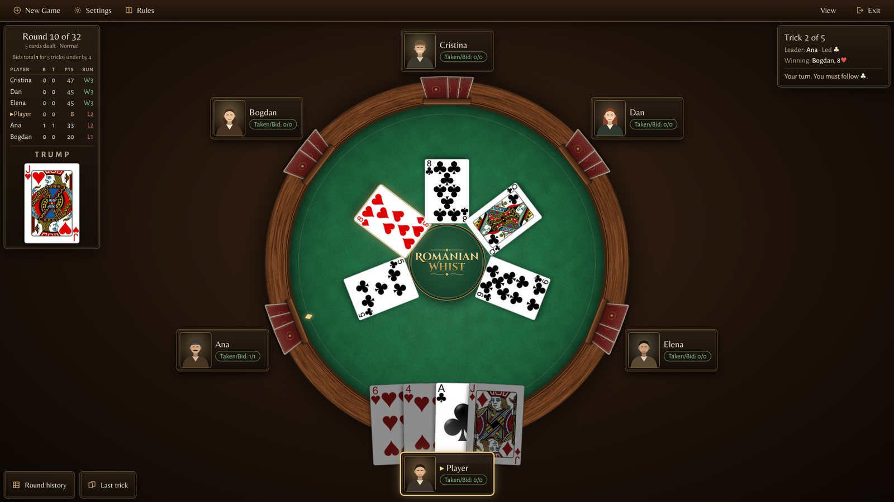

The table redesign, phase by phase: thirteen steps between 17 and 23 October 2026. Every picture is the same moment of the same seeded game, so only what the phase changed moves.

Drag across the picture to compare the first and the last.

1.0 2.0The table through all thirteen steps, each picture alone first, then its caption typed out to read along with. 3 min 12 s.